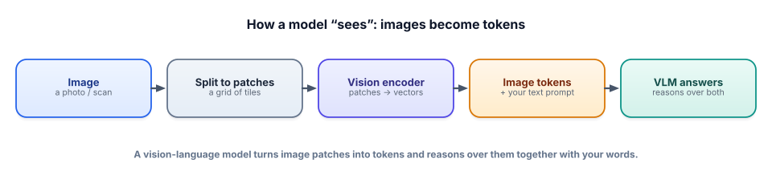

Beyond text: vision-language models
Everything so far has been words in, words out. But a huge amount of the world’s information is visual — screenshots, receipts, charts, product photos, scanned forms. Vision-language models let a system see, and that unlocks a whole class of products.
Picture cutting a photo into a grid of small square stickers and describing each sticker with a short code. Now the picture is a list of codes, just like a sentence is a list of words, and the model can read both lists together. Where it breaks: when you cut a photo into stickers, tiny details that cross a sticker's edge, like small print, can get lost, which is one reason VLMs misread small text and miscount objects.
What a vision-language model is
A vision-language model (VLM, or “multimodal LLM”) is an LLM that accepts images alongside text and reasons about both together. You can hand it a photo and ask “what’s in this picture?”, give it a screenshot and ask “what does this error mean?”, or show it a chart and ask “what was the trend in Q3?”. It’s the same next-token machine from Track 1, extended so that images can enter the prompt as tokens.
How does an image become tokens? The model splits the image into a grid of small patches, and a vision encoder turns each patch into a vector — the same “meaning as vectors” idea as text embeddings (Track 1), but for pixels. Those vectors become image tokens that sit in the context window right next to your text tokens, so the model attends over words and image regions jointly. That’s the whole trick: once an image is tokens, the LLM machinery you already understand handles the rest.

What it looks like (free and local)
You don’t need a paid API to try this: open VLMs like LLaVA run locally through Ollama, so the whole thing stays $0. The call looks almost exactly like a normal chat, with an image attached:
import ollama
reply = ollama.chat(
model="llava", # an open vision-language model
messages=[{
"role": "user",
"content": "What is happening in this image? List the objects you see.",
"images": ["receipt.jpg"], # the image goes right in the message
}],
)
print(reply["message"]["content"])The interface barely changed — an images field — but the capability jumped enormously. Common uses: describing images, visual question answering (“how many people are in this photo?”), reading text in an image, understanding charts and diagrams, and extracting structured data from documents (the next lesson).
Where VLMs break
VLMs are impressive and unreliable in specific, predictable ways — and naming these is a senior signal. They’re weak at precise spatial reasoning (exact positions, “is A to the left of B”), counting many objects, and reading small or dense text reliably. And they hallucinate visually just like text models hallucinate facts — confidently describing an object that isn’t there, especially if your question presupposes it (“what breed is the dog?” when there’s no dog).
The mitigations are familiar: ask neutral questions, don’t presuppose, verify critical extractions, and for exact text use OCR as a check. Treat a VLM’s reading of an image the way you treat any model output — useful, fluent, and to be verified when it matters.
Facts from Anthropic vision docs: Claude splits an image into 28 x 28-pixel patches, so it costs ceil(width / 28) x ceil(height / 28) visual tokens. Claude 4.7 and later models use a high-resolution tier: long edge up to 2,576 px and at most 4,784 visual tokens; bigger images are downscaled. Their example: a 1000 x 1000 image is 1,296 tokens. Traffic numbers are our assumptions.
- Volume. 80,000 claims a day x 4 phone photos = 320,000 images, each 4032 x 3024 (12 MP).
- Sent as-is. 4032 x 3024 is far over the limits, so each is downscaled to the cap: up to 4,784 tokens per photo. 320,000 x 4,784 = 1.53 billion tokens a day. On claude-opus-5-5 at $4 per million input: $6,124 a day, before any text or output.
- Resize first. Damage triage does not need 12 MP. Resize to 1092 x 819: ceil(1092/28) = 39, ceil(819/28) = 30, so 1,170 tokens. 320,000 x 1,170 = 374 million tokens, $1,498 a day on Opus 5.5. A 75% cut from one line of Pillow code, and lower latency because uploads are smaller.
- Right-size the model. If an eval shows claude-haiku-5-5 (from $0.10 per million input, models overview) meets your triage bar: 374M x $0.10/M = $37 a day.
- Where not to downsample. Reading a licence plate or a VIN needs pixels. Crop that region at full resolution and send it as its own image instead of upscaling the whole photo.
- Guard the known weaknesses. Ask neutral questions ("list visible damage") rather than leading ones ("how bad is the dent on the door?"), and send high-value or low-confidence claims to a human adjuster.
- A vision-language model (VLM) takes images + text and reasons over both — an LLM extended to see.
- Images become tokens: split into patches → vision encoder → vectors → image tokens in the context window.
- Uses: description, visual Q&A, reading text, chart/diagram understanding, document extraction.
- Free/local is possible — open VLMs like LLaVA via Ollama; the API just adds an
imagesfield. - Weaknesses: precise spatial reasoning, counting, small text, and visual hallucination — verify when it matters.
You’re building a feature where users upload a photo of a whiteboard and ask questions about it. Name two things a VLM will handle well, one thing it may get wrong, and how you’d reduce the risk of that failure.
▸ Show solution & reasoning
Handles well: summarizing the general content (“this is a system-design sketch with three boxes and arrows”), and answering high-level questions about legible text or obvious structure. May get wrong: reading messy handwriting precisely, transcribing dense or small text accurately, or exact spatial claims (“the arrow goes from the second box to the fourth”) — and it may confidently invent a label that isn’t there.
Reducing the risk: for anything that depends on exact text, run OCR as a second, verifiable source and cross-check; ask non-leading questions (“what text can you read?” rather than “what’s the deadline written here?”, which invites a confident guess); and, for consequential extractions, show the user what the model read and let them confirm. The general rule from the whole course applies: match the amount of trust you place in the output to the cost of it being wrong, and verify the pieces that matter.
How does an image get into a vision-language model so it can be reasoned about with text?
Why is CLIP useful for image search?
Under Claude's documented patch rule, how many visual tokens does a 560 x 280 pixel image cost (it is under every resize limit)?
A user uploads a photo of a living room and asks 'what breed is the dog?'. There is no dog. What is the most likely VLM failure and the best mitigation?
The reason multimodal matters commercially is that an enormous share of real business information was never text you could query — it lived in images and documents: receipts and invoices, ID cards, insurance forms, medical scans, product photos, screenshots in support tickets, slides, engineering diagrams, shelf photos in retail. For decades, using that information meant either manual data entry or brittle, narrow computer-vision pipelines that took months to build per use case. A capable VLM collapses much of that into a prompt: “read this form and return the fields as JSON,” “is this product damaged?”, “what does this screenshot show the user doing?” Whole workflows that required humans looking at pictures become automatable.
For you, this connects directly to everything else in the course rather than replacing it. A VLM is still an LLM, so prompting (Track 2), structured output (Track 2), grounding and hallucination management (Tracks 1, 3, 7), evaluation (Track 6), and serving cost (Track 8 — images are token-hungry and pricier) all carry over unchanged. The new skill is knowing when a problem is actually a vision problem, choosing between a VLM and a specialized tool like OCR, and combining them. That’s the theme of this track: not a new field, but your existing toolkit pointed at images, documents, and audio — which is exactly how the highest-value multimodal products get built.
labs/02_structured_output.pyFree and offline once set up: Ollama with qwen2.5:7b, plus the packages in labs/README.md. From the course folder:
python labs/02_structured_output.pyWhat to look for: No local vision model is installed for this course, so no lab sends an image. The closest lab is the structured-output one, because the production use of a VLM is usually 'image in, validated JSON out': the same Pydantic schema passed as format, validation, and the business-rule check would wrap a VLM call. What it does not show: image tokens, resizing, or visual hallucination. To see those you would pull a small vision model (several GB) and pass an images list.
Small samples: these labs use 5 to 20 cases so they run in minutes on a laptop. Where they report a rate, they print n and a 95% Wilson interval. Read them as a demonstration of the mechanism, not as a measured rate for your system; for that you need hundreds of cases and several seeds.
▸ Recorded output (our run, 2026-11-03, qwen2.5:7b on a laptop GPU)
C) Schema-valid is not business-valid: validate rules, retry with the error
rule violations repaired by retry: 0
D) Content check against gold labels (shape-valid does not mean right)
#4: model said 'delivery', a human would file 'other': 'Just wanted to say the delivery guy was very polite. thanks!'
category accuracy: 7/8
Summary
vague-prompt valid: 0/4 = 0% (95% CI 0%-49%)
prompt-only valid: 8/8 = 100% (95% CI 68%-100%)
schema-constrained valid: 8/8 = 100% (95% CI 68%-100%)
category accuracy (gold): 7/8 = 88% (95% CI 53%-98%)
On this model and these 8 emails a clear prompt already gives valid JSON every time, so the schema shows
NO measurable advantage here. Its value is the guarantee on the inputs you have not tested yet.
Look: constrained decoding guarantees the SHAPE. It does not guarantee the CONTENT is right;
that is what the business-rule check + retry (and your eval set) are for.Your numbers will differ a little run to run. Full log: labs/outputs. Source: labs/02_structured_output.py.
Warm-up. Compute visual tokens on Claude for a 1456 x 812 screenshot (under the limits), and its input cost per 10,000 screenshots on claude-sonnet-5-5 ($2 per million).
▸ Solution
ceil(1456/28) = 52, ceil(812/28) = 29, so 52 x 29 = 1,508 tokens. 10,000 x 1,508 = 15.08M tokens x $2/M = $30.16. Add your text prompt and output on top.
Transfer. A support-ticket feature attaches full-page browser screenshots (2560 x 1440) and asks the VLM what error the user sees. Costs are high and the model sometimes reads the wrong error from a sidebar. Propose two changes.
▸ Solution
1) Crop: detect the dialog or main content region (or ask the user to crop) and send only that, which cuts tokens and removes distracting sidebars that cause wrong reads. 2) Combine with text: run OCR on the crop and include the extracted text in the prompt, then ask the VLM to answer using both and to quote the error text it relied on. If its quote does not appear in the OCR text, flag the answer. The why: fewer pixels on irrelevant regions means less cost and fewer chances to attend to the wrong thing, and OCR gives an exact-text check.
Stretch. Design an eval for a VLM that counts items on retail shelf photos. What metrics and slices, and how do you decide whether it is good enough to replace manual counts?
▸ Solution
Golden set: a few hundred shelf photos with human counts per product, covering lighting, angle, occlusion and crowded shelves. Metrics: mean absolute error per product, the share of counts within +/-1, and the share with large errors (off by 5 or more), because a few big misses drive stock-outs. Slice by number of items (VLMs degrade as counts rise), occlusion and image quality. Compare with the current manual process's own error rate, measured on the same photos. Decide in advance: e.g. replace manual counts only for shelves with 10 or fewer items where the error is within +/-1 at least 95% of the time, and keep humans or a detection model for the rest.
Junior How does a vision-language model take an image as input?
▸ Model answer
The image is split into small square patches. A vision encoder, usually a vision transformer, turns each patch into a vector, and a projection layer maps those vectors into the same space as the language model's token embeddings. The resulting image tokens sit in the context window next to the text tokens, and the language model attends over both. That is why images cost tokens: for example Claude counts one visual token per 28 x 28-pixel patch, so a 1000 x 1000 image is 1,296 tokens.
Mid When would you use a VLM, and when a classic computer-vision model, for an image task?
▸ Model answer
A VLM is great when the task is open-ended or changes often, the labels are expressed in language, volume is moderate, and a few seconds of latency is fine: describing damage, answering questions about screenshots, reading a varied form. A classic model, like a trained detector or classifier, wins when the task is fixed and narrow, volume is huge, latency must be milliseconds, or precise localisation and counting matter: defect detection on a production line, counting items. Often the best system uses both: a detector finds regions and a VLM reasons about the crops.
Senior How would you control cost and reliability for a VLM feature processing millions of images a month?
▸ Model answer
Cost: resize to the smallest resolution that passes the eval, crop to regions of interest, route easy images to a cheaper model, cache results by image hash, and use batch processing for anything offline. Reliability: schema-constrained outputs with validation and retries, neutral prompts to reduce hallucination, cross-checks such as OCR for exact text, and confidence routing to humans for high-stakes cases. Measure per-slice accuracy on a golden set, monitor online with sampled human review, and track tokens per image because a client sending larger photos silently raises the bill.
The single most valuable business application of vision is turning documents into data. Next: document AI & OCR.